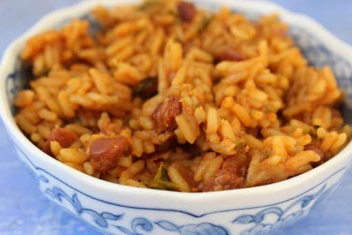

Home
Arroz Con Habichuelas

Ingredients
- White Rice
- Chicken Broth or Water
- Bacon
- 1 cup Sofrito
- 2 cans Pink Beans
- 1/2 cup Tomato Sauce
- 1 packet Sazon
- Olives
- Capers
Directions
- Cook the bacon, then add sofrito and sazon.
- Add the tomato sauce, olives, beans, broth and capers. Simmer for about an hour or until done.
- Cook the rice separately and serve topped with the habichuelas.